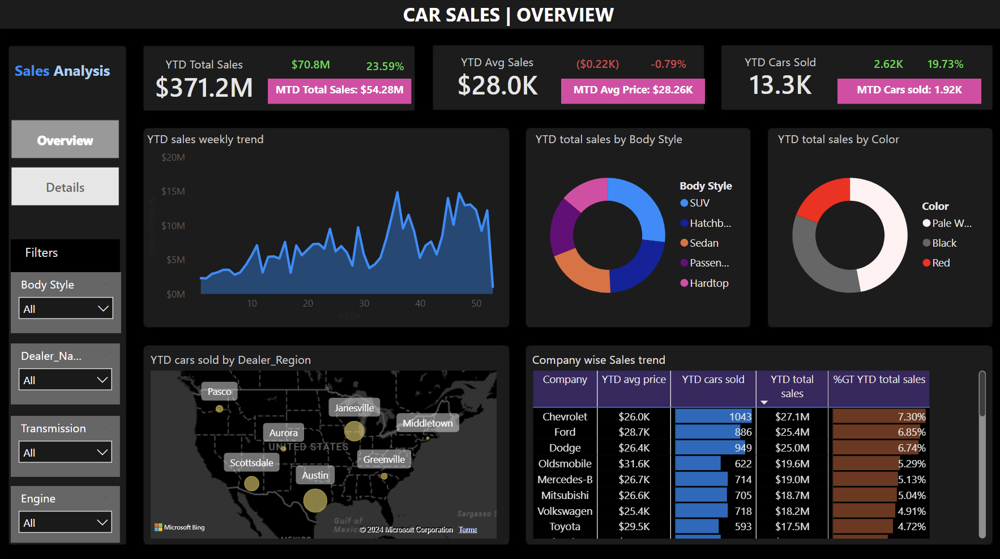

This project includes a series of comprehensive case studies, covering essential data analysis techniques such as Exploratory Data Analysis (EDA), Hypothesis Testing(AB), Multiple linear Regression Analysis, Machine Learning Model Development, and the Presentation of Findings.

Key Skills: EDA, AB testing, Regression Analysis, Machine Learning, Data Visualisation, PACE framework
Key Technologies: Python, Tableau
This project consists of different individual case studies that covers Exploratory Data Analysis (EDA), Hypothesis Testing, Regression analysis, Multivariate Hypothesis Testing, Building a ML model and Presentation of findings
Key Skills: EDA, AB testing, Regression Analysis, Machine Learning, Data Visualisation, PACE framework
Key Technologies: Python, Tableau

This project consists of different individual case studies that covers Exploratory Data Analysis (EDA), Hypothesis Testing, Logistic Regression Model to predict customer churn, Building a ML model and Presentation of findings
Key Skills: EDA, AB testing, Regression Analysis, Machine Learning, Data Visualisation, PACE framework
Key Technologies: Python, Tableau

A comprehensive dashboard for analyzing automotive sales trends which provide a detailed breakdown of (YTD)figures, weekly trends, and sales by dealer/region.
Also help's to keep track of important KPI's while empowering users to uncover hidden patterns and opportunities within the automotive sales landscape in a more granular level.
Excel reports & Dashboards on Financial Forecasting and Sales Analysis

This project performs AB testing to determine if women scored more goals than men in FIFA World Cup matches. Using the Wilcoxon-Mann-Whitney test,
we analyze scoring data from the past years performance to ascertain any significant differences between the two genders' performance in the tournaments.
This project uses unsupervised ML model K-means clustering to categorize customers based on shopping patterns. By identifying customer groups, we can tailor targeted marketing campaigns to enhances customer satisfaction and
loyalty by delivering personalized experiences aligned with diverse needs.

Tableau visualisations done as part of the presentation for other ML projects and complete Tableau Dashboards

All PowerBI projects

All database projects that are done as part of all other projects related to data exploration, cleaning , analysis and optimisation

A complete code to design this portfolio website. It has been created using HTML code and model framework from https://html5up.net